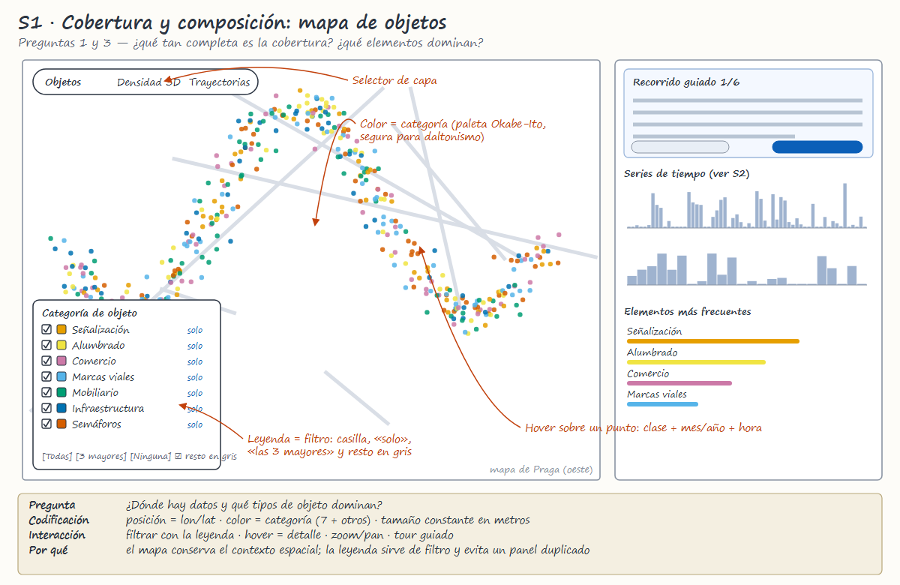
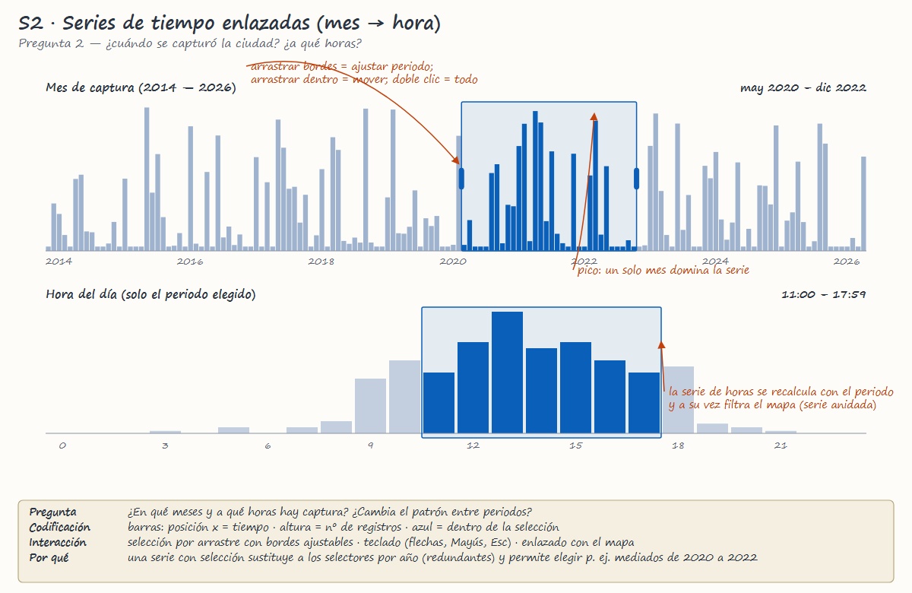
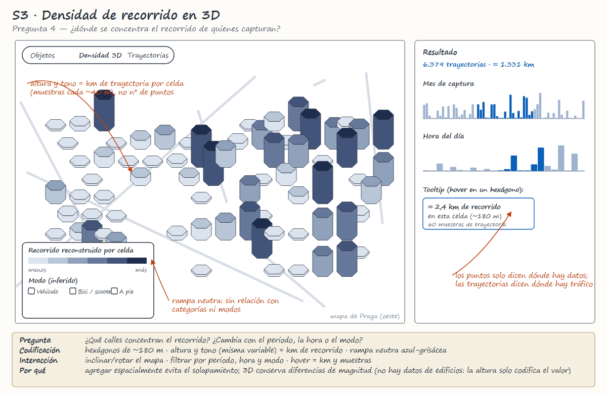
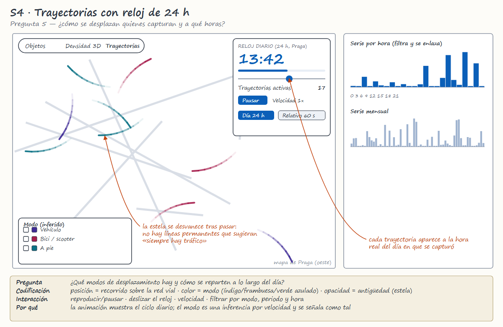
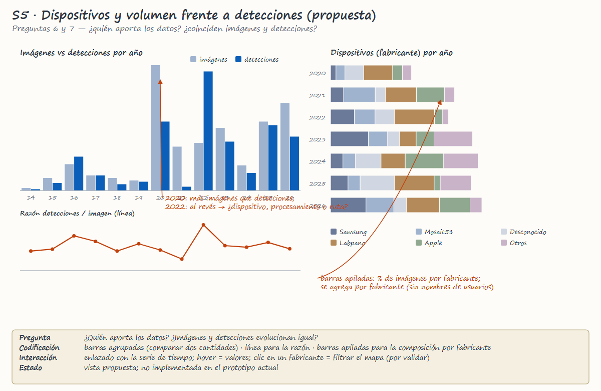

DS5343 Data Visualization · UTEC · 2026-2
Análisis de datos y bocetos · Semana 6
Jeffry Arturo Hilario Quintana · [Completar integrantes]
| Pregunta | Hallazgo |
|---|---|
| Cobertura | 39,5 % de las detecciones en el 10 % de las celdas |
| Tiempo | Oct 2022 aporta el 26,0 %; pico a las 13:00 h |
| Objetos | Señalización 34 % · alumbrado 25 % · comercio 12 % |
| Dispositivos | Samsung 27 % · Mosaic51 20 % · desconocido 13 % |
| Volumen | 2020: más imágenes · 2022: más detecciones |

Color = categoría.
La leyenda es el filtro.
P1 y P3

Selección por arrastre.
La serie de horas depende del periodo.
P2

Altura y tono = km de recorrido.
P4

La estela se desvanece.
Cada viaje aparece a su hora.
P5

Barras agrupadas + razón.
P6 y P7 · vista propuesta